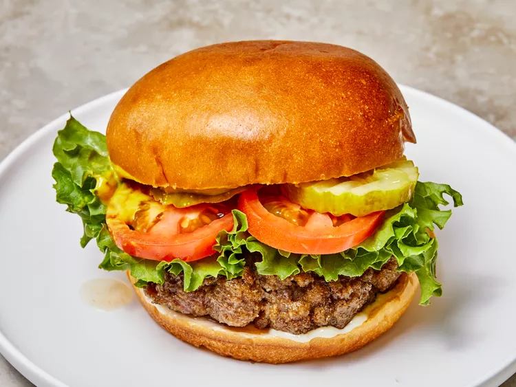

Juiciest Hamburger Ever

No more dry, lackluster hamburgers.
These are juicy, and spices can be easily added or changed to suit anyone's taste.
Total Time:
35 mins
-
Servings:
8
Ingredients
- 2 pounds ground beef
- 1 egg, beaten
- ¾ cup dry bread crumbs
- 3 tablespoons evaporated milk
- 2 tablespoons Worcestershire sauce
- ⅛ teaspoon cayenne pepper
- 2 cloves garlic, minced
Steps
- Gather all ingredients.
- Preheat a grill for high heat.
- Mix the ground beef, egg, bread crumbs, evaporated milk, Worcestershire sauce, cayenne pepper, and garlic in a large bowl using your hands.
- Form the mixture into 8 hamburger patties.
- Lightly oil the grill grate. Grill patties until browned and no longer pink, about 5 minutes per side.
- Serve hot and enjoy!